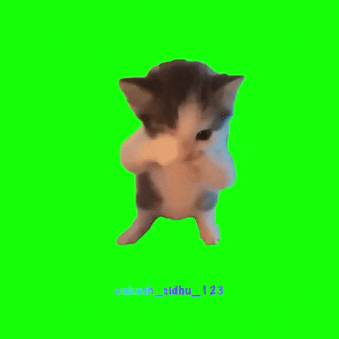

🐍 Анаконда в джунглях
Раунд:
1
Очки:
0
Рекорд:
0
Вопрос…
Читай вопрос…
7
🎉 Раунд 2!

Вопросы стали сложнее — поехали!
Game Over
Ваш счёт:
0
Начать заново
Веди анаконду стрелками ← ↑ → ↓ к номеру правильного ответа
📄 Загрузить вопросы из Word (.docx)
Источник вопросов: встроенные